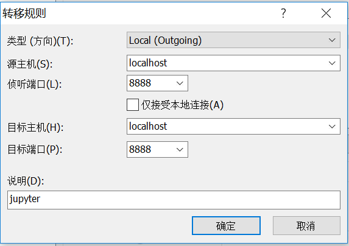

配置Anaconda和Jupyter Notebook
在清华tuna镜像上下载anaconda的linux安装包，上传到服务器上，使用命令：1
bash Anaconda3-2019.10-Linux-x86_64.sh
安装。（直接用./xxx.sh运行会提示权限不够，但并不需要sudo）安装过程中可以指定安装到的目录，我这里指定了~/data/。
安装完成后还不能找到conda指令，需要运行命令：1
2echo 'export PATH="~/data/anaconda3/bin:$PATH"' >> ~/.bashrc
source ~/.bashrc
添加环境变量。现在就可以使用conda命令了。
接下来需要配置Jupyter，生成并修改配置文件，其方法和这篇博客的第二节一样（不必用pip安装jupyter，anaconda已经含了）。
在本地浏览器访问
配置好环境之后，让jupyter服务器端在后台运行：1
nohup jupyter notebook --allow-root > ~/data/jupyter.log
如果不输出日志，可以设置为：1
nohup jupyter notebook >/dev/null 2>&1
nohup表示不挂起，在退出ssh终端后也会继续运行。jupyter的终端输出会记录在~/data/jupyter.log中。
在本地运行：ssh -N -f -L localhost:8888:localhost:8888 -p 22 remote_user@remote_host
把远程主机的8888端口映射到本地的8888端口。在浏览器中输入localhost:8888即可访问jupyter服务。
（也可以使用Xshell，连接上远程主机后在文件-属性中选择类别：连接-SSH-隧道，如下添加：

之后在浏览器中输入localhost:8888访问。